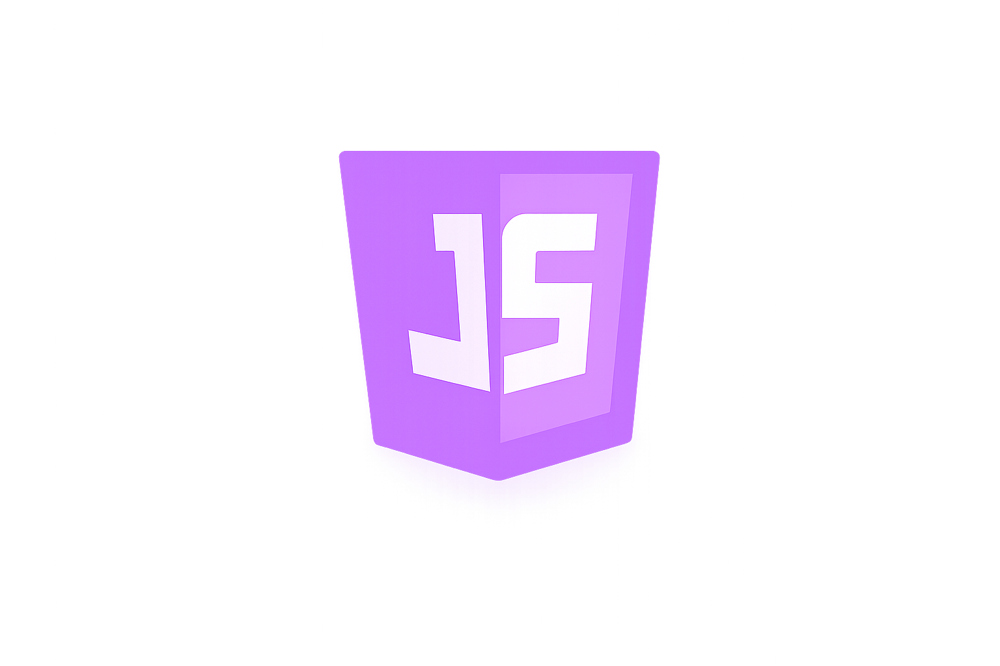

Sobre mim
Desenvolvedor focado em Java, Swift e Web — com experiência em sistemas desktop, redes locais e estruturas de dados.
No lado nativo construo aplicações macOS com SwiftUI, explorando CoreData, padrões MVVM e interfaces glass. No backend e sistemas académicos uso Java com POO, algoritmos e comunicação via Sockets TCP/UDP.
Na web domino HTML, CSS e JavaScript — desde layout responsivo a animações e interações dinâmicas. Trabalho ainda com SQL para gestão de bases de dados relacionais.
Valorizo código limpo, estruturado e funcional — e a curiosidade de perceber como os sistemas funcionam por dentro.

Timeline Académica
Introdução à Programação
IP
Programação Orientada ao Objecto I
OOP1
Algoritmo e Estrutura de Dados I
AED1
Programação Orientada ao Objecto II
OOP2
Algoritmo e Estrutura de Dados II
AED2
Programação Web
PE
Redes de Computador
RC
Paradigmas de Programação
PP
About My Skills


Experiência
Desenvolvi projetos académicos práticos: sistemas de gestão, aplicações de comunicação em rede, transferência de ficheiros e soluções baseadas em árvores binárias.
Foco
Compreender como os sistemas funcionam internamente — desde a organização dos dados até à comunicação entre dispositivos. Valorizo código claro, funcional e bem estruturado.
Áreas de Interesse
Contacto
Pode me contactar através do GitHub, Email, WhatsApp, Instagram: